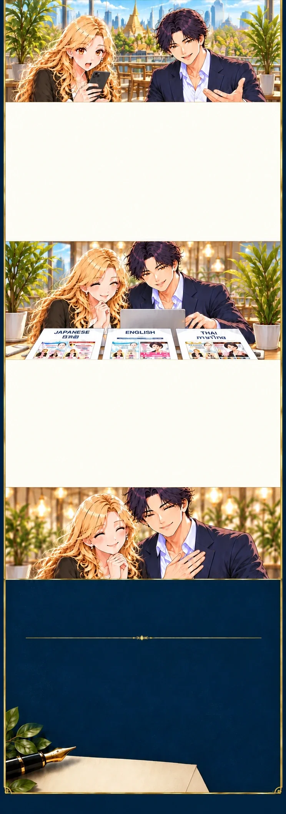

あなたのお店に、
成果で応えるために。
あなたのお店の売上を伸ばす。
そのために、全力を尽くすことを
ゼロは約束します。
広告の反応、問い合わせ、予約を確認し、レポートで共有。広告を調整し、必要に応じてLPも改善します。
つくって終わりにせず、ゼロがお店に合う打ち手を一緒に積み重ねていきます。
株式会社ゼロ
株式会社ゼロは、東京都港区を拠点に、LP制作を専門に取り組んできた会社です。
企画・構成・文章・デザインから、広告運用、LINEの質問対応・予約受付まで、一つの流れで支援します。

検索広告と専用LPに、
チャンスがあります。
ゼロは、バンコクでは検索広告や専用LPを十分に活かせていない店舗が多いと見ています。探しているお客様に広告で届け、専用LPで魅力を伝える。その組み合わせに、大きな可能性があります。
ゼロは専用LPへの切り替えで成約率を改善してきました。料金・魅力・選ばれる理由を順番に伝え、予約と他店との差別化につなげます。
日本で磨いた力を、
日本語・英語・タイ語へ。
ゼロの見解では、バンコクの店舗マーケティングと日本には10年ほどの差があり、日本で磨いた手法を活かせる余地が大きいと考えています。
ゼロは、日本のクリエイティブは世界に通用すると確信しています。創業13年、日本市場で培った構成・文章・デザインの力を、英語・タイ語でも相手に伝わる表現へ磨いて届けます。
あなたのお店の売上を伸ばす。
そのために、全力を尽くすことを
ゼロは約束します。
広告の反応、問い合わせ、予約を確認し、レポートで共有。広告を調整し、必要に応じてLPも改善します。
つくって終わりにせず、ゼロがお店に合う打ち手を一緒に積み重ねていきます。
株式会社ゼロ